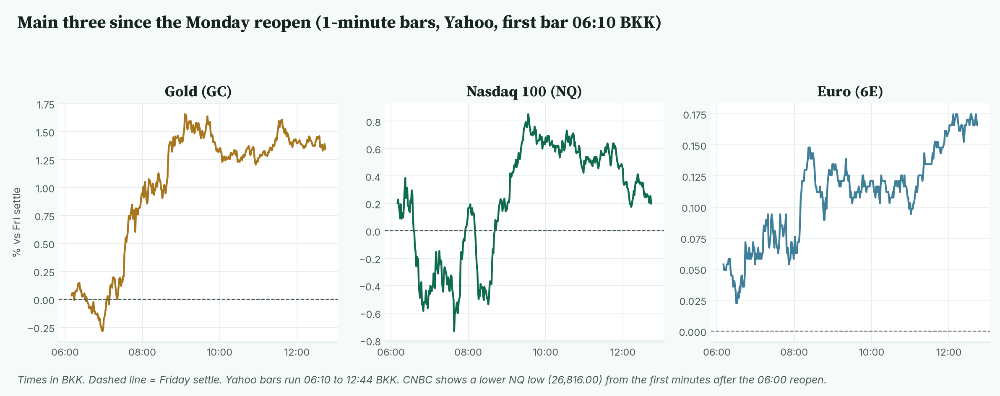
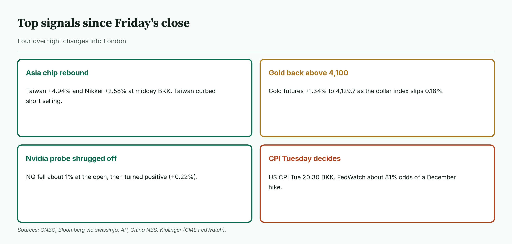
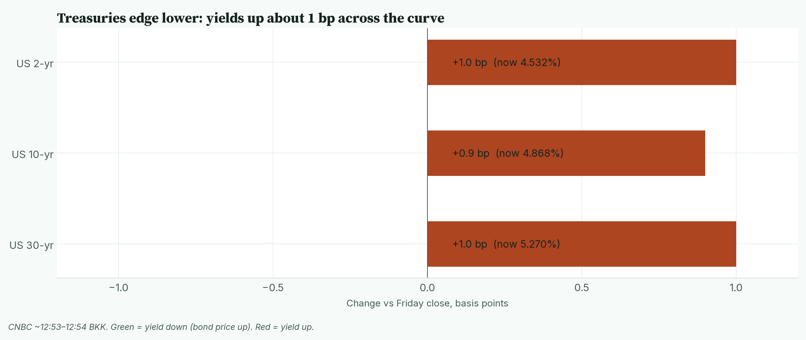
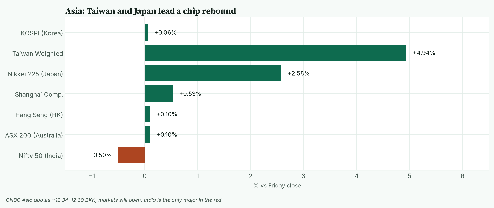
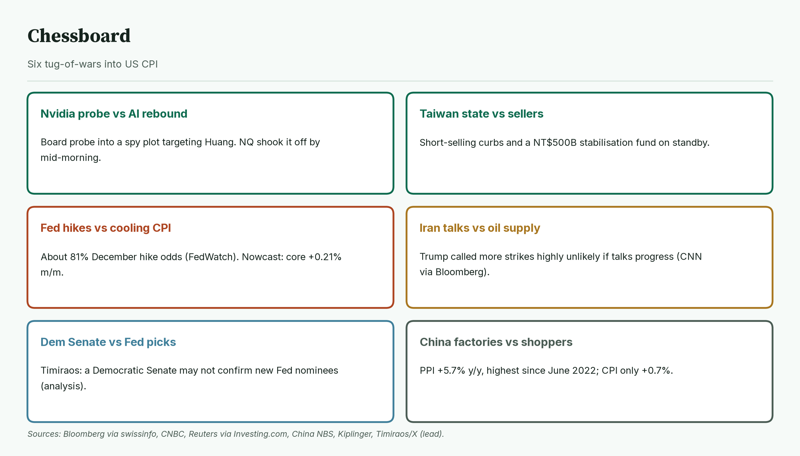
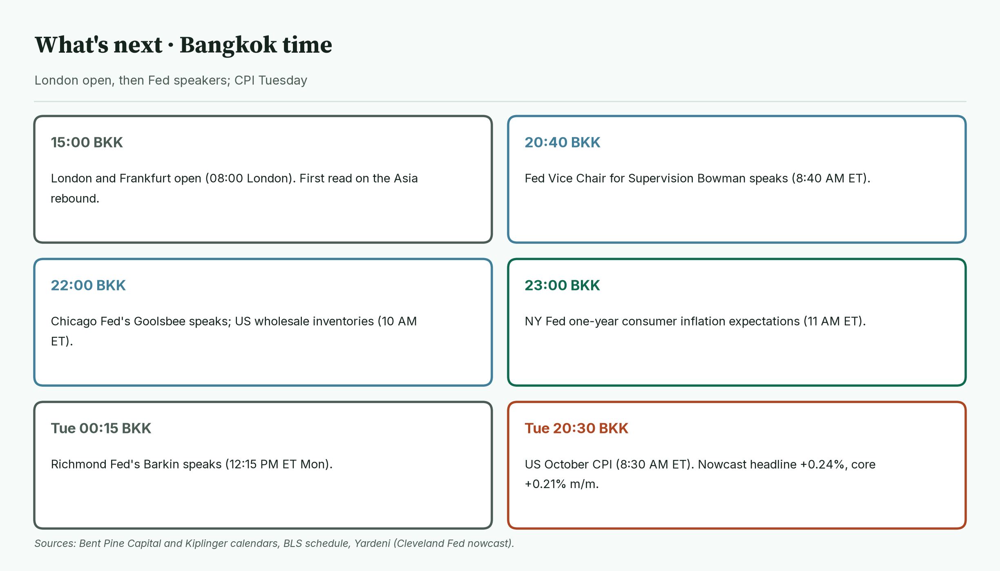
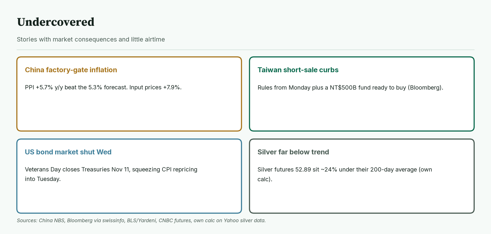
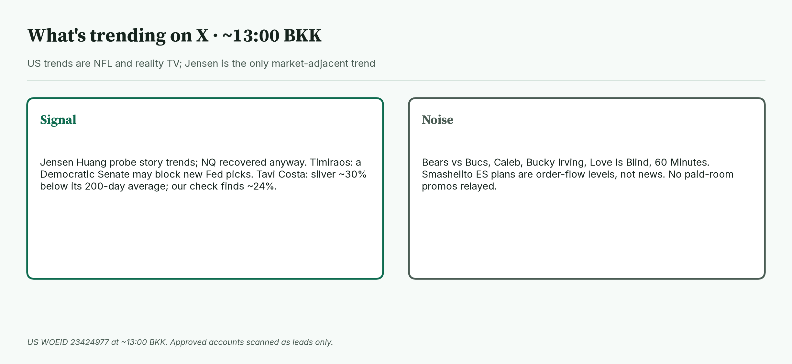

April · Market Intel, pre-London · Mon Nov 9, 2026 · ~12:57 BKK / ~05:57 London
Headline: Asia's chip markets bounced hard, led by Taiwan +4.94% and the Nikkei +2.58%. Gold futures rose 1.34% to 4,129.7. Nasdaq futures shrugged off an early 1% drop on the Nvidia probe news and sit +0.22%. Fed speakers today and US CPI on Tuesday at 20:30 BKK are the deciders.
So what: London opens at 15:00 BKK. Fed's Bowman speaks at 20:40 BKK, Goolsbee at 22:00 BKK, and the NY Fed inflation-expectations survey lands at 23:00 BKK. The big one is October CPI, Tue 20:30 BKK.
 Caption: Futures at 12:44 BKK versus Friday's settle. Gold leads the gains. Nasdaq futures recovered from a roughly 1% drop near the open. The euro edges up as the dollar slips.
Caption: Futures at 12:44 BKK versus Friday's settle. Gold leads the gains. Nasdaq futures recovered from a roughly 1% drop near the open. The euro edges up as the dollar slips.
1) Main instruments The three main contracts since the Monday reopen, as a % move from Friday's settle. Gold peaked at 09:06 BKK. Nasdaq peaked at 09:33 BKK and has faded since. The euro is grinding to new session highs. |
 Caption: The three main contracts since the Monday reopen, as a % move from Friday's settle. Gold peaked at 09:06 BKK. Nasdaq peaked at 09:33 BKK and has faded since. The euro is grinding to new session highs.
(Futures are contracts that trade nearly around the clock, so they show the mood before stock markets open. Quotes are from the Yahoo Finance futures feed at 12:44 BKK (05:44 UTC), about 10 minutes delayed, and match CNBC within a tick or two. The CME reopen was 06:00 BKK (18:00 New York Sunday). Yahoo's 1-minute bars start at 06:10 BKK, so I checked the full-session highs and lows against CNBC; where they differ, CNBC's full-session figure is used and labelled.)
Caption: The three main contracts since the Monday reopen, as a % move from Friday's settle. Gold peaked at 09:06 BKK. Nasdaq peaked at 09:33 BKK and has faded since. The euro is grinding to new session highs.
(Futures are contracts that trade nearly around the clock, so they show the mood before stock markets open. Quotes are from the Yahoo Finance futures feed at 12:44 BKK (05:44 UTC), about 10 minutes delayed, and match CNBC within a tick or two. The CME reopen was 06:00 BKK (18:00 New York Sunday). Yahoo's 1-minute bars start at 06:10 BKK, so I checked the full-session highs and lows against CNBC; where they differ, CNBC's full-session figure is used and labelled.)
- Gold futures (GC, Dec): 4,129.7, +1.34%, at 12:44 BKK. Driver: a softer dollar and calmer stocks pulled buyers back after last week's swings (Bloomberg via swissinfo, CNBC). Friday's settle was 4,074.9. Today's range is 4,062.5 (06:58 BKK) to 4,143.3 (09:06 BKK).
- Nasdaq 100 futures (NQ, Dec): 27,143.75, +0.22%, at 12:44 BKK. Driver: Nvidia's board opened a probe into whether CEO Jensen Huang was targeted in a foreign spying effort. NQ fell as much as about 1% at the Asian open, then reversed (Bloomberg via swissinfo). Friday's settle was 27,085.25. The high was 27,319.00 (09:33 BKK). The full-session low was 26,816.00 (CNBC, shortly after the 06:00 BKK reopen); Yahoo's bars from 06:10 BKK show 26,882.25 at 07:38 BKK.
- Euro futures (6E, Dec): 1.11750, +0.17%, at 12:44 BKK. Driver: the dollar weakened against most major currencies (Bloomberg via swissinfo). Friday's settle was 1.11565. Today's range is 1.11585 (06:31 BKK) to 1.11765 (12:42 BKK). Spot euro is 1.1159 (CNBC, ~12:54 BKK).
- Takeaway: gold is the cleanest mover. Nasdaq futures are positive but have given back about 175 points from the 09:33 BKK high. The euro is pressing its session top.
Context. The dollar index (DXY, the dollar against six major currencies) is 102.11, −0.18% (CNBC, ~12:54 BKK). The 10-year US yield (what the US government pays to borrow for 10 years) is 4.868%, up 0.9 basis points (CNBC, ~12:54 BKK; a basis point is 0.01 percentage point). The VIX (the "fear gauge" built from S&P 500 option prices) closed Friday at 25.64, −9.01% versus Thursday's 28.18 (Cboe via CNBC). US oil (CL, December) is 90.47, −0.40% (12:44 BKK). S&P 500 futures (ES) are 7,433.25, +0.42% (12:44 BKK). Bitcoin is $74,395, −1.76% versus CNBC's previous close (CNBC/Coin Metrics, ~12:54 BKK).
2) Top signals Four overnight changes. Asia's chip markets rebounded, gold reclaimed 4,100, Nasdaq shook off the Nvidia probe, and CPI is the week's decider. |
 Caption: Four overnight changes. Asia's chip markets rebounded, gold reclaimed 4,100, Nasdaq shook off the Nvidia probe, and CPI is the week's decider.
Caption: Four overnight changes. Asia's chip markets rebounded, gold reclaimed 4,100, Nasdaq shook off the Nvidia probe, and CPI is the week's decider.
- Friday's US session was a partial repair. The Nasdaq Composite rose 1.09% to 24,579.42. The S&P 500 rose 0.31% to 7,376.86. The Dow fell 0.46% to 51,285.73. For the week the Nasdaq lost 3.4% and the S&P 500 2.7%. (High: CNBC, MarketWatch)
- Jobs ran hot. October payrolls rose 165,000, far above the 59,000 Dow Jones forecast. Unemployment fell to 4.1%. (High: CNBC citing BLS)
- Asia's chip hubs bounced. Taiwan is +4.94% at 41,661.70 after regulators curbed short selling. The Nikkei is +2.58% at 58,914.90. Kospi is flat (+0.06%). (High: CNBC quotes, Bloomberg)
- Fed hike odds are high. CME FedWatch shows about 81% odds of a December quarter-point hike (via Kiplinger).
- Takeaway: the AI rout has paused, not ended. Rate-hike odds are now the main weight on stocks.
3) Rates, FX and oil Treasuries edged lower overnight. Yields are up about 1 bp across the curve. |
 Caption: Treasuries edged lower overnight. Yields are up about 1 bp across the curve.
Caption: Treasuries edged lower overnight. Yields are up about 1 bp across the curve.
- Now (CNBC ~12:53–12:54 BKK): 2-year 4.532% (+1.0 bp), 10-year 4.868% (+0.9 bp), 30-year 5.270% (+1.0 bp).
- Mentor: bond prices fall when yields rise. A small rise after a hot jobs report means traders are still leaning toward more Fed hikes.
- Yen. USD/JPY is 158.27, −0.11% (CNBC, ~12:54 BKK).
- Oil. WTI's range today is 89.80 to 91.42 (CNBC). January Brent is 97.41, −0.93% (CNBC). CNN reported President Trump said more strikes on Iran were "highly unlikely" if talks make progress (via Bloomberg).
- Takeaway: rates are drifting up into CPI. Oil is soft on Iran-talk hopes, which helps the inflation picture.
4) Why it matters Asia at CNBC's midday prints. Taiwan and Japan lead the chip rebound; India is the only major in the red. |
 Caption: Asia at CNBC's midday prints. Taiwan and Japan lead the chip rebound; India is the only major in the red.
Last week's AI sell-off pushed Japan and Taiwan into bear markets. Today's rebound is partly policy-made.
Caption: Asia at CNBC's midday prints. Taiwan and Japan lead the chip rebound; India is the only major in the red.
Last week's AI sell-off pushed Japan and Taiwan into bear markets. Today's rebound is partly policy-made.
- Taiwan's regulator and finance ministry curbed short selling from Monday and said a NT$500 billion stabilisation fund is ready (High: Bloomberg via swissinfo).
- China's factory-gate prices (PPI, what producers charge) rose 5.7% on the year in October, the most since June 2022 and above the 5.3% forecast. Consumer prices rose only 0.7% (High: China NBS, CNBC, Reuters).
- Mentor: when a government props up its market, the bounce can be sharp but fragile. It tells you sellers were forced, not that the story changed.
- Takeaway: Nasdaq needs the Asia rebound to hold through London, and a calm CPI, before the bounce looks real.
5) Chessboard Six tug-of-wars into CPI. The Fed path and the Nvidia probe can move Nasdaq and gold fastest. |
 Caption: Six tug-of-wars into CPI. The Fed path and the Nvidia probe can move Nasdaq and gold fastest.
Caption: Six tug-of-wars into CPI. The Fed path and the Nvidia probe can move Nasdaq and gold fastest.
- Nvidia probe vs AI rebound. The board is investigating whether Huang was targeted in a foreign spying effort. Nasdaq futures shrugged it off by mid-morning (Bloomberg via swissinfo).
- Taiwan's state vs sellers. Short-selling curbs and a NT$500B fund on standby (Bloomberg).
- Fed hikes vs cooling inflation. About 81% December hike odds (FedWatch via Kiplinger). The Cleveland Fed nowcast sees core CPI +0.21% on the month (via Yardeni).
- Iran talks vs oil supply. More strikes "highly unlikely" if talks progress (CNN via Bloomberg).
- Democratic Senate vs Fed nominations. Nick Timiraos argues a Democratic Senate may not confirm new Fed picks, leaving Kevin Warsh to work with the board he inherits (lead from X; analysis, not an outcome).
- China's factories vs shoppers. PPI +5.7%, CPI +0.7% (NBS).
- Takeaway: the unscheduled risk is more Nvidia headlines. The scheduled risk is a hot CPI that cements a December hike.
6) Leading indicators (BKK times) London open, then three Fed speakers and inflation expectations. CPI lands Tuesday. |
 Caption: London open, then three Fed speakers and inflation expectations. CPI lands Tuesday.
Caption: London open, then three Fed speakers and inflation expectations. CPI lands Tuesday.
- 15:00: London and Frankfurt open (08:00 London).
- 20:40: Fed Vice Chair for Supervision Michelle Bowman speaks (8:40 AM ET).
- 22:00: Chicago Fed's Austan Goolsbee speaks; US wholesale inventories (10:00 AM ET).
- 23:00: NY Fed one-year consumer inflation expectations (11:00 AM ET).
- Tue 00:15: Richmond Fed's Tom Barkin speaks (12:15 PM ET Monday).
- Tue 20:30: US October CPI (8:30 AM ET). The Cleveland Fed nowcast sees headline +0.24% and core +0.21% on the month (via Yardeni). US bond markets close Wednesday for Veterans Day.
- Levels to watch: GC 4,062.5 and 4,143.3. NQ 26,816.00 and 27,319.00. 6E 1.11585 and 1.11765. 10-year 4.886% (today's CNBC high). WTI 91.42.
- Takeaway: today's deciders are Bowman at 20:40 BKK and the NY Fed inflation-expectations survey at 23:00 BKK. Tuesday's CPI at 20:30 BKK is the week's real test.
7) Undercovered Four stories with little airtime. They touch inflation pass-through, market support and metals positioning. |
 Caption: Four stories with little airtime. They touch inflation pass-through, market support and metals positioning.
Caption: Four stories with little airtime. They touch inflation pass-through, market support and metals positioning.
- China's factory-gate inflation. PPI +5.7% on the year; input prices +7.9% (High: China NBS).
- Taiwan short-sale curbs. In force from Monday, with a NT$500B fund ready (High: Bloomberg via swissinfo).
- US bond market shut Wednesday. Veterans Day squeezes the CPI repricing into Tuesday and Thursday (High: Yardeni, BLS schedule).
- Silver far below trend. Silver futures at 52.89 sit about 24% below their 200-day average (my calculation from Yahoo daily data).
8) What's trending on X (~13:00 BKK) US trends are NFL and reality TV. "Jensen" is the only market-adjacent trend. |
 Caption: US trends are NFL and reality TV. "Jensen" is the only market-adjacent trend.
Caption: US trends are NFL and reality TV. "Jensen" is the only market-adjacent trend.
- US: Bears, Bucs, Caleb, Jensen, #LoveIsBlind, 60 Minutes.
- Signal: the Huang probe story is the top market-adjacent trend. Nasdaq futures recovered anyway.
- Signal / analysis: Nick Timiraos says a Democratic Senate may not confirm Trump's next Fed picks (lead only).
- Signal / unverified figure: Tavi Costa says silver trades almost 30% below its 200-day average, last seen in March 2020. My check on continuous silver futures finds about 24%, so treat his figure as unconfirmed.
- Noise: NFL, reality TV. Smashelito's ES plans are order-flow levels, not news. No JJ / vwaptrader1 paid-room promos relayed.
Bottom line: Asia stopped the bleeding, gold is back above 4,100, and Nasdaq futures held positive despite the Nvidia headline. For Jim: gold at 4,129.7 is just under its 4,143.3 high; 4,062.5 is the floor. Nasdaq at 27,143.75 needs to hold Friday's 27,085.25 settle; 27,319.00 is the ceiling and 26,816.00 the early low. The euro at 1.11750 sits at the top of 1.11585–1.11765. Interpretive note: Fed speakers who lean hawkish could cap gold and Nasdaq before CPI. That is a possible path, not a forecast.
Confidence: Futures levels: high for direction, medium-high for the exact tick (Yahoo feed, about 10 minutes delayed; settles match CNBC). NQ and ES full-session lows from CNBC because Yahoo's 1-minute bars start at 06:10 BKK. Yields, DXY, spot euro, Brent, yen, Bitcoin: CNBC, time-stamped. VIX: Friday official close via CNBC. Fed odds: CME FedWatch via Kiplinger, not read directly from CME. Friday US closes and payrolls: CNBC, MarketWatch. Asia: CNBC quotes, Bloomberg via swissinfo. China data: NBS. Calendar: Bent Pine Capital, Kiplinger, BLS. Timiraos and Tavi Costa: X leads only. Silver gap: my own calculation.
Charts: /workspace/april-charts/2026-11-09/pre-london-{scoreboard,main3,signals,rates,asia,chess,leading,under,xsplit}.png |